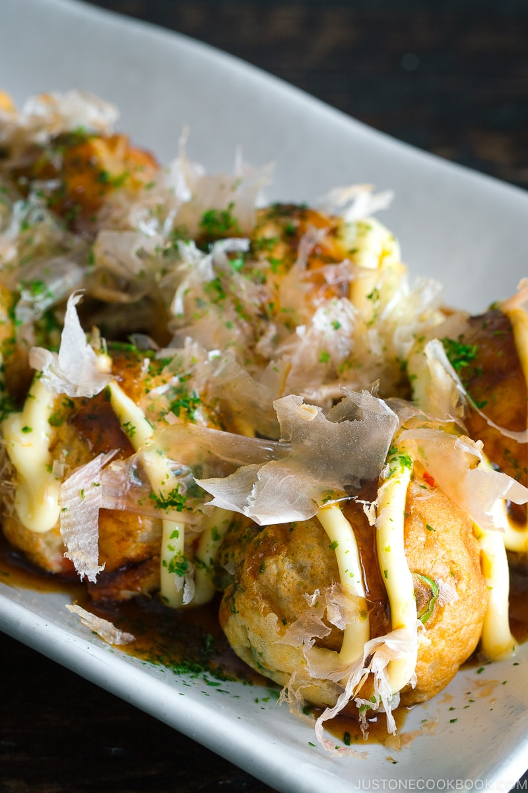

Takoyaki

Takoyaki (たこ焼き) is a Japanese
snack in the shape
of little round balls
containing pieces of octopus.
Tako-yaki literally
translates to “octopus-grilled/fried”
and some
people may call it “Grilled Octopus Balls” or
“Octopus Dumplings”.
Ingredients
- ¼ cup katsuobushi (dried bonito flakes)
- 2 green onions/scallions
- 1 Tbsp pickled red ginger (beni shoga or kizami beni shoga)
- 4.2 oz octopus sashimi (boiled octopus)
- 2 Tbsp neutral-flavored oil (vegetable, rice bran, canola, etc.)
- ⅓ cup tenkasu/agedama (tempura scraps)
INSTRUCTIONS
- Gather all the ingredients.
Prepare the Filling
- Grind the katsuobushi (bonito flakes) into a fine powder. Set aside; we'll use this
powder when we're cooking the takoyaki.
- Cut the green onions into fine slices and mince the red pickled ginger.
- Cut the octopus into ½ inch (1.3 cm) bite-sized pieces (cut into smaller pieces for kids so
they can chew it more easily). I use the "rangiri" cutting technique.